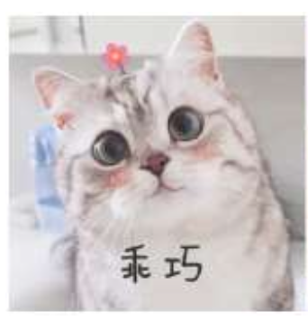

尤雨溪之后将所开发出的框架命名为“Vue.js”，HTML5。并在2014年推出第1.0版，[7]获得回响之后成为代码托管服务平台GitHub上最多人关注的项目之一[6][8]。另出自于对动漫的喜爱，尤雨溪在推出的Vue.js各版本里，会以动漫作品当作代号。如第1.0版的“Evangelion”，是《新世纪福音战士》；第2.0版的“Ghost in the Shell”，是指《攻壳机动队》；第2.3版的“JoJo's Bizarre Adventure”，则是《JoJo的奇妙冒险》等等[9]。JavaScript、Vue.js
2005年尤雨溪前往美国念书，[1]在就读科尔盖特大学时，尤雨溪主修的是工作室艺术和艺术史[5]。到了快毕业的期间里，他意识到很难找到与本科相关的工作，于是前往帕森斯设计学院，攻读美术设计和技术的硕士学位，在那里他开始接触到多媒体设计工具库OpenFrameworks与编程语言JavaScript，并学习编写应用程序和用户界面[5]。
在Google的Creative Lab就职期间里，尤雨溪接触到Google团队开发的Web应用框架“AngularJS”[5]。尤雨溪对Angular可借由资料绑定来处理网页DOM的运作方式很感兴趣，并想以此为基础开发出一个功能相似，但内容较轻巧的框架[5]。尤雨溪之后将所开发出的框架命名为“Vue.js”，并在2014年推出第1.0版，[7]获得回响之后成为代码托管服务平台GitHub上最多人关注的项目之一[6][8]。另出自于对动漫的喜爱，尤雨溪在推出的Vue.js各版本里，会以动漫作品当作代号。如第1.0版的“Evangelion”，是《新世纪福音战士》；第2.0版的“Ghost in the Shell”，是指《攻壳机动队》；第2.3版的“JoJo's Bizarre Adventure”，则是《JoJo的奇妙冒险》等等[9]。
2014年期间尤雨溪从Google离职，前往专做软件框架的Meteor Software公司，希望能让自己开发的Vue.js有更多发展机会[1]。不过Meteor Software之后倾向采用由Facebook开发的JavaScript工具库React，让尤雨溪只能选择离开Meteor Software[1]。